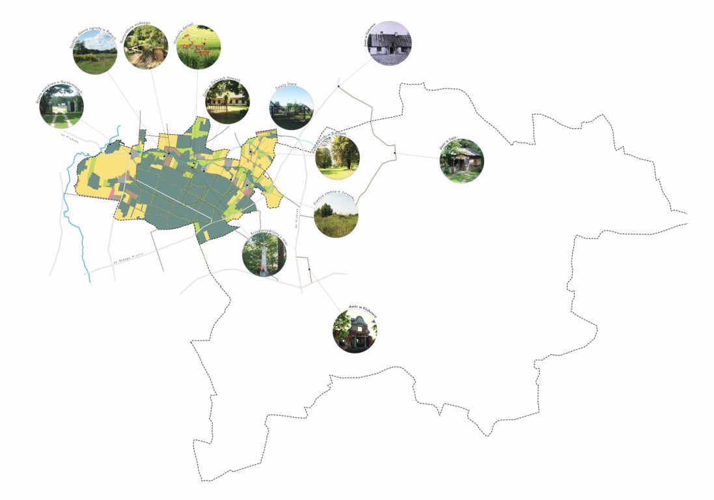
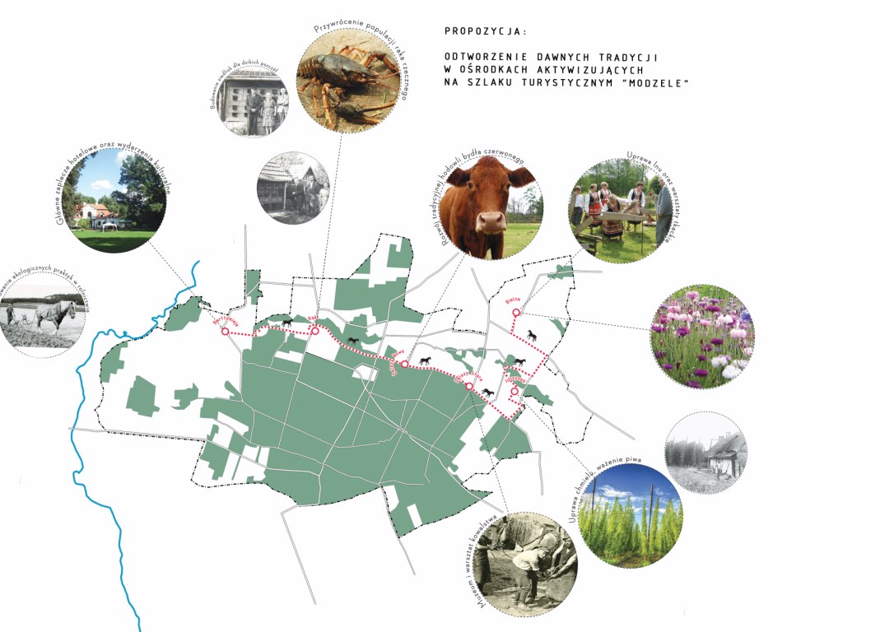
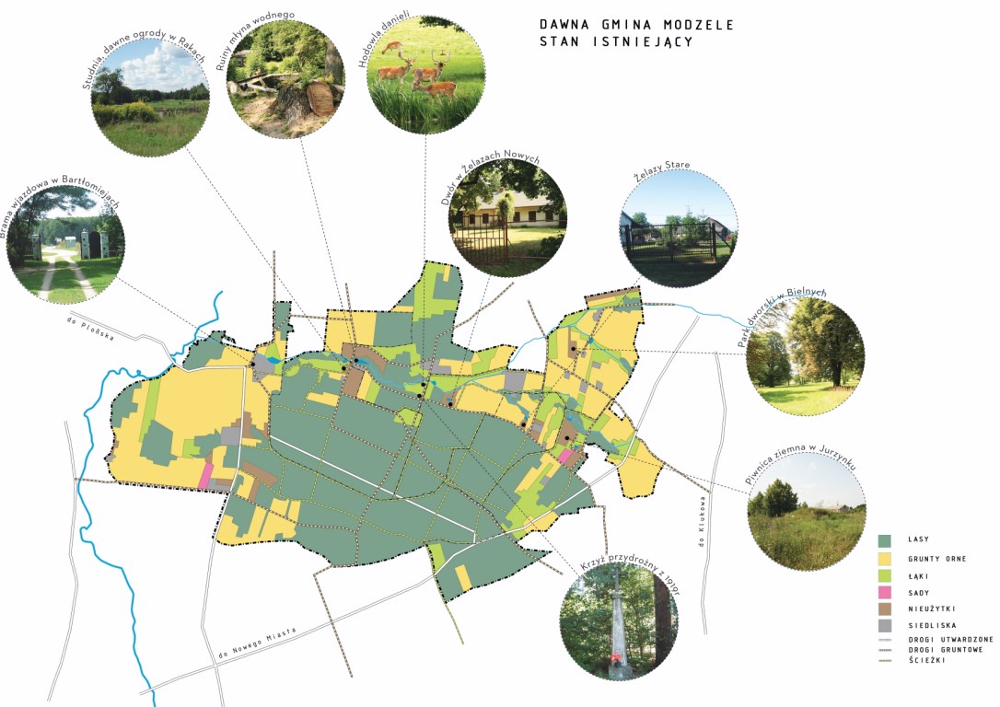
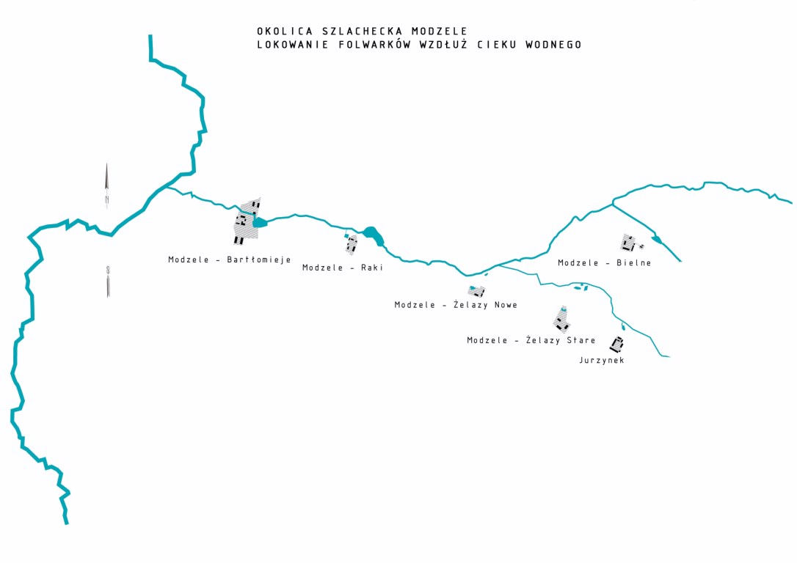

Szlak turystyczny
Propozycja szlaku Modzele - Klukówek

Potencjalny szlak Modzele - Klukówek

Odtworzenie dawnych tradycji w ośrodkach aktywizujących na szlaku turystycznym "Modzele"

Dawna gmina Modzele - stan istniejący

Okolica szlachecka Modzele - lokowanie folwarków wzdłuż cieku wodnego